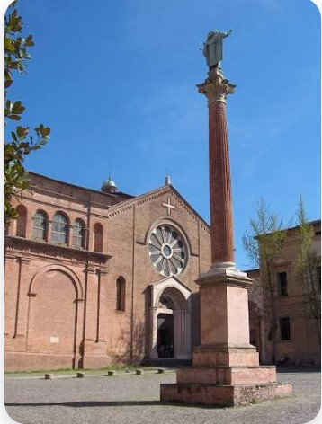
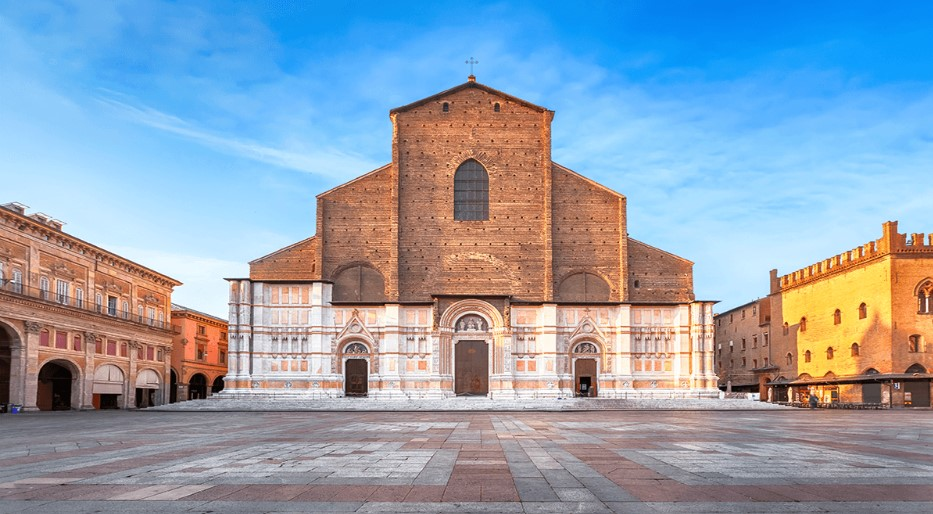

BOLOGNA'S CHURCHES
Bologna has one of the most important religious cultural heritage monuments in Italy full of history that deserved to get a particular attention from our project thus, our natural choice was oriented to these two most emblematic churches located in the city centre: San Petronio and San Domenico.

Figure 1: Methodological data profile overview for the Basilica of San Petronio.

Figure 2: Methodological data profile overview for the Basilica of San Domenico.